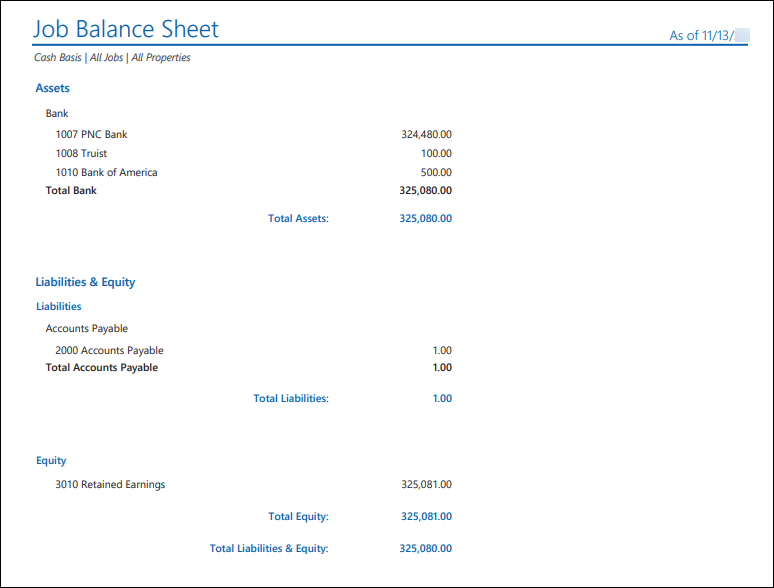
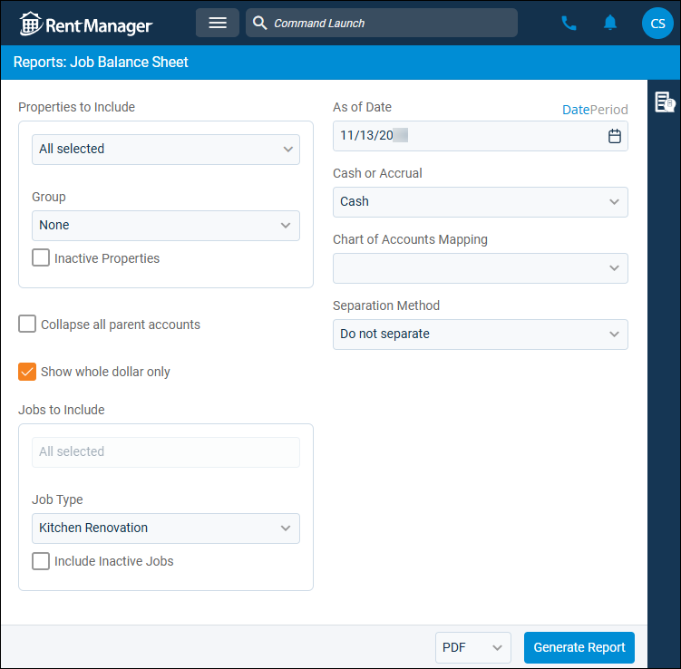
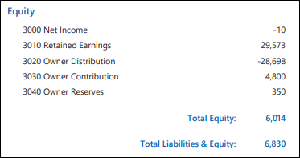

Source: https://rmxhelp.rentmanager.com/Topics/Express/Other/Reports/Job-Balance-Sheet.htm
Job Balance Sheet (Report)
The Job Balance Sheet report shows the financial position of a job as of the report date. Generate this report to view the assets of one or more jobs and the claims (liabilities and equities) against those assets.
Related Privileges
| Group | Privilege | Column |
|---|---|---|
| Letter/Email Templates/Reports/Packets | Run reports | Enabled |
| Run accounting reports | Enabled |
Additionally, on the Reports tab, you must have access to Job Balance Sheet.
For more information, refer to Control User Access.
To view the Job Balance Sheet report, do the following:
-
Go to
 arrow_forward Accounting arrow_forward Job Costing arrow_forward Job Balance Sheet.
arrow_forward Accounting arrow_forward Job Costing arrow_forward Job Balance Sheet.
The Reports: Job Balance Sheet page displays. -
Adjust the report options as desired. Each option is described below.
-
Generate the report in your desired file format(s).
Related Preferences
Reports may look different depending on whether or not the Use modernized report style system preference is enabled. For more information, refer to General Report Options (System Preferences).

Report Options
The report options described below determine what data displays in the report.

Properties to Include
Select each property or a property Group to be included in the report.
More Information
This field populates only with the properties to which you have access. Your access to properties can be managed from your user account or on the property's details page. For more information, refer to Limit Access to a Property.
Optionally, check Show Inactive Properties to include properties that are no longer active.
Collapse All Parent Accounts
Check to display only the total value of the parent account in the report. Otherwise, the value of the parent account and all subaccounts and their values.
Show Whole Dollar Only
If checked, general ledger account totals are rounded to the nearest whole dollar (0–49 cents is rounded down, and 50–99 cents is rounded up). Otherwise, the actual amount displays.
Jobs to Include
Select the job(s) to be examined in the report. Optionally, check Include Inactive Jobs to include jobs that are no longer active.
As of Date
Rent Manager examines relevant report information as of (up through) the date entered to determine the data that displays in the report.
To the right of the As of Date option, you can click Date to manually select an as of date, or Period to select an as of date based on accounting periods.
Related Preferences
To generate the report using accounting periods, the General Ledger Settings (System Preferences) option to Enable accounting periods must be enabled.
Financial reports default to manual Date view unless the General Ledger Settings (System Preferences) option to Default to accounting periods for financial reports is checked. Enabling this option sets the financial reports to default to the Period view for As of Date.
Period As of Date
Configure the following options in descending order to determine the period As of Date used:
| Field | Description |
|---|---|
|
Series |
Select the desired series, as defined in accounting periods. |
|
Start Year |
Select the name of the period year to use. |
|
Period |
Select the name of the period to use. The End Date of the selected period is used as the As of Date in the report. |
Cash or Accrual
This option determines whether the financial activity is calculated on a cash or accrual basis and impacts which GL accounts display in the report.
| Option | Description |
|---|---|
|
Accrual |
Includes all transactions for which income was earned and expenses were incurred, regardless of whether the payment was received or disbursed. |
|
Cash |
Includes only transactions for which payments are received or made. |
Chart of Accounts Mapping
To customize how general ledger accounts display in the report, select the name of the desired Chart Mapping. If no chart mappings are created, < None > displays. For more information, refer to Chart Accounts Mapping (Page).
Separation Method
Select one of the following options to determine how the report results are batched:
| Option | Description |
|---|---|
|
Do not separate |
All selected properties are combined into a single report. |
|
Separate by Properties |
Generates a separate report for each selected property. |
|
Separate by Jobs |
Generates a separate report for each selected job. |
Report Results
The report results are described below including, if applicable, section, column, and subreport descriptions.
Report Header
The report header displays the report name and key information selected in the report options, such as date information and which properties were examined in the report.
Assets
This section displays the general ledger (GL) balances associated with the selected job(s) as of the report date for all asset accounts. Asset accounts are grouped together by type and provide subtotals for each grouping.
The total of your assets is always equal to the total of your liabilities and equities: (Assets = Liabilities + Equities).
Liabilities & Equity
This section displays the general ledger (GL) balances associated with the selected job(s) as of the report date for all liability and equity accounts. Liability and equity accounts are grouped together by type and provide sub-totals for each grouping.
The total of your liabilities and equities is always equal to the total of your assets: (Assets = Liabilities + Equities).
More Information
Net Income is an equity account that is calculated by subtracting expenses from income. However, any manual transactions made to the Net Income equity account also affects the balance displayed on the Job Balance Sheet. If you drill down on the Net Income amount, Rent Manager displays a Job Profit & Loss report.

Retained Earnings is an optional Equity account that you may choose to have display on your Job Balance Sheet. At the end of each year, you can have Rent Manager roll your Net Income total into Retained Earnings. This does not actually move the money between accounts; it is for reporting purposes only. For more information, refer to General Ledger Settings (System Preferences).
Column Descriptions
The columns that display in the report are described below.
| Column | Description |
|---|---|
|
Account |
The name and number for GL accounts that have balances for the selected job(s). |
|
Amount |
The balance for each GL account as of the report date. |